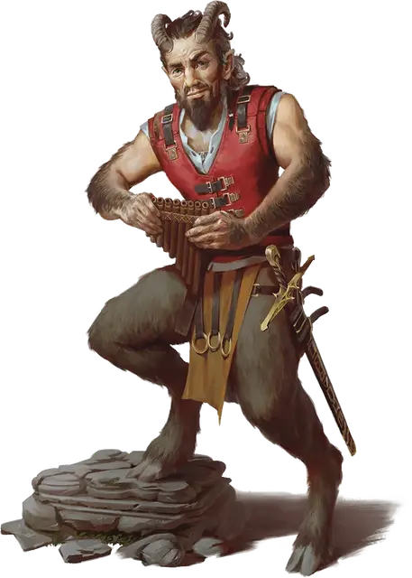

Сатир
Satyr
Средняя Фея (Фея), хаотично-нейтральная

Класс Доспеха 14 (кожаный доспех)
Хиты 31 (7к8)
Скорость 40 футов
| мод | спас | ||
|---|---|---|---|
| СИЛ | 12 | +1 | +1 |
| ЛОВ | 16 | +3 | +3 |
| ТЕЛ | 11 | +0 | +0 |
| мод | спас | ||
|---|---|---|---|
| ИНТ | 12 | +1 | +1 |
| МДР | 10 | +0 | +0 |
| ХАР | 14 | +2 | +2 |
Навыки Восприятие +2, Выступление +6, Скрытность +5
Чувства пассивное Восприятие 12
Языки Общий, Сильван, Эльфийский
Опасность 1/2 (100 опыта)
Бонус мастерства +2
Среда обитания Лес
Особенности
Сопротивление магии. Сатир совершает с преимуществом спасброски от заклинаний и прочих магических эффектов.
Панфлейта сатира. Сатир может носить панфлейту, на которой он может играть, чтобы создать магические воздействия. Обычно в группе один сатир носит такую флейту. Если у сатира есть такая, он получает следующее дополнительное действие:
Панфлейта. Сатир играет на панфлейте и выбирает один из следующих магических эффектов: нежная колыбельная, пугающий аккорд или чарующая мелодия. Все существа в пределах 60 футов от него, слышащие флейту, должны преуспеть в спасброске Мудрости Сл 13, иначе они попадают под действие описанного ниже эффекта. Другие сатиры и существа, которых нельзя очаровать, не попадают под действие эффекта.
Попавшее под эффект существо может повторять спасбросок в конце каждого своего хода, оканчивая на себе эффект при успехе. Если спасбросок существа успешен, или эффект закончился для него, то оно получает иммунитет к этой панфлейте на 24 часа.
• Нежная колыбельная. Существо засыпает и лишается сознания на 1 минуту. Эффект заканчивается, если существо получает урон, или если кто-то действием разбудит его.
• Пугающий аккорд. Существо испугано в течение 1 минуты.
• Чарующая мелодия. Существо становится очарованным сатиром на 1 минуту. Если сатир или кто-то из его спутников причиняет вред существу, эффект на нем немедленно заканчивается.
Действия
Таран. Рукопашная атака оружием: +3 к попаданию, досягаемость 5 футов, одна цель. Попадание: Дробящий урон 6 (2к4 + 1).
Короткий меч. Рукопашная атака оружием: +5 к попаданию, досягаемость 5 футов, одна цель. Попадание: Колющий урон 6 (1к6 + 3).
Короткий лук. Дальнобойная атака оружием: +5 к попаданию, дистанция 80/320 футов, одна цель. Попадание: Колющий урон 6 (1к6 + 3).
Описание
«МЕЖ НОЧЬЮ И ДНЕМ МЕНЯ ДУХИ ГОНЯЛИ,
ПО ЧИСТЫМ СЕРДЦАМ ОНИ ТАК ТОСКОВАЛИ,
И ТУТ ВДРУГ УВЕРЕННОСТЬ ВСЮ РАСТЕРЯЛИ,
И В УШИ МНЕ, ТОТЧАС, СМЕЯСЬ, ЗАКРИЧАЛИ.
НЕ РАЗ ТЫ МНЕ ЧАШУ НАПОЛНИ, А ТРИ
ПЛЯШУ Я С ГРАФИНОМ — К УСТАМ ОН ПРИЛИП.
ДА СКИНЬТЕ ЖЕ ПЛАТЬЯ, НЕЗРИМЫЕ ФЕИ,
ПУСТЬ ПОХОТИ ЦАРЬ СОБИРАЕТ ТРОФЕИ.
ПОНИКНУВ ВЕТВЯМИ ВДАЛЬ ТРЕНТЫ УХОДЯТ,
ТАК ШУСТРО С ДЕВИЦ КОРСЕТИКИ СХОДЯТ.
БРИЗ ПЕСНИ МОЕЙ ИХ ВСЕХ ВЕСЕЛИТ,
А ЧАШЕ В РУКАХ ОПУСТЕТЬ НЕ ГРОЗИТ.
СОЛНЦЕ СТАНЕТ ЛУНОЙ, А ОНА СОЛНЦЕМ СТАНЕТ.
КОРОТАТЬ ТАК ЧАСЫ НИКОГДА НЕ УСТАНУ»
— СОНЕТ ОЗОРНОГО САТИРА
Сатиры — шумные феи, которые резвятся в диких лесах, движимые любопытством и гедонизмом в равной мере.
Сатиры напоминают крепких мужчин с мохнатой нижней половиной тела и раздвоенными козьими копытами. На их головах растут рога, имеющие размер от пары небольших шишечек до крупных витых бараньих рогов. Они, как правило, отращивают бороду.
Гедонистические гуляки. Сатиры жаждут крепчайших напитков, ароматнейших специй и головокружительных танцев. Сатир чувствует голод, когда он не может побаловать себя, и он может пройти большие расстояния, чтобы удовлетворить свои желания. Он может похитить хорошего менестреля, чтобы услышать прекрасные песни, проскользнуть в хорошо защищенный сад, чтобы созерцать красивого паренька или девушку, или может проникнуть во дворец, чтобы попробовать лучшие блюда. Сатиры не позволяют веселью пройти мимо них. Они примут участие в любом празднике, про который услышали. В мире достаточно праздников и святых дней, чтобы оправдать бесконечное празднование.
Опьяненные напитками и удовольствиями, сатиры не думают о последствиях гедонизма, к которому они подталкивают других. После них такие существа сами удивляются своему поведению. Таким гулякам, возможно, придется выпрашивать извинения, чтобы оправдать свое хаотичное поведение перед родителями, нанимателями, семьей или друзьями.